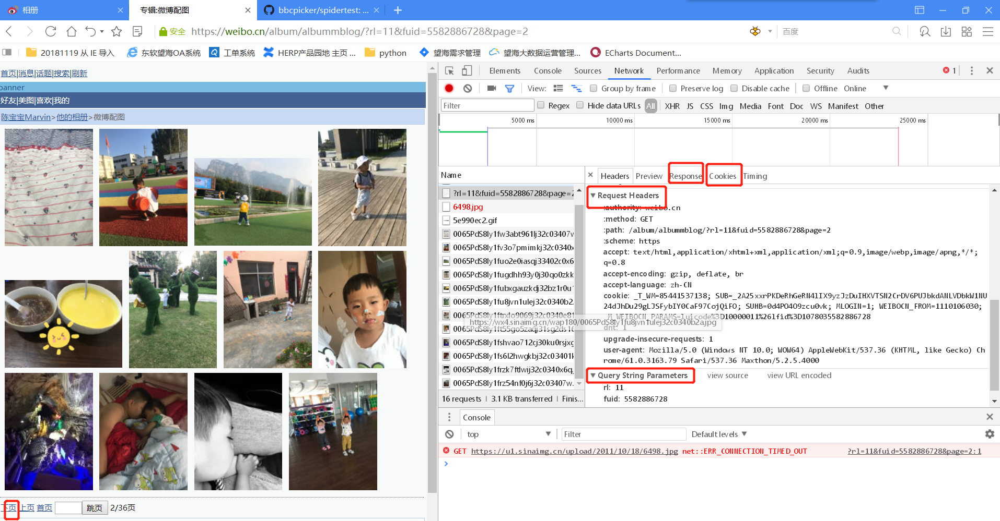

pytho爬虫练习项目的—爬取某个微博相册的全部图片
本文主要是通过爬取某个微博相册的全部图片练习pyquery的使用，并对实现过程中遇到的问题和解决的bug进行记录
全部代码见连接：github
此git仓库中还包含其他一些爬虫练习项目可供各位童鞋交流参考
项目需求：
爬取某个特定微博相册的所有图片，并存放在本地文件夹中。
实现步骤：
分析目标连接。这里我找了一个老的微博移动端的地址来作为目标url (https://weibo.cn/)。因为新版微博移动端的相册使用Ajax发起请求的时候的参数较多，这里仅为练习，知道原理即可。在进入微博后找到想要爬取的相册，打开开发者工具，在network中找到相应的访问连接以及对应的request_header、参数、cookie以及response返回的格式。点击下一页可以反复观察，找出一致性。
构造获取微博相册页面方法。这里面的uid是每个微博的唯一id，点击任何人的微博主页在开发者工具中都能找到相应的uid。注意，如果需要爬取全部图片需要先登录，获取cookie信息，这里我先把自己的cookie去掉了。另外在requests.get方法中要加上allow_redirects=False参数，不然会报错
1
2
3
4
5
6
7
8
9
10
11
12
13
14
15
16
17
18
19
20
21
22
23def get_page(page):
base_url = 'https://weibo.cn/album/albummblog/?'
params = {
'rl': '11',
'fuid': '5582886728',# 唯一值 uid
'page': page
}
url = base_url + urlencode(params)
headers = {
'Host': 'weibo.cn',
'User-Agent':random.choice(user_agent),
'upgrade-insecure-requests': '1', #随机切换模拟浏览器
'cookie': ''
}
try:
response = requests.get(url, headers=headers,allow_redirects=False) #如果不加allow_redirects=False 会报重定向30次报错
if response.status_code == 200:
html = response.content
return html
except requests.ConnectionError as e:
print('Error', e.args)分析response返回页面结构，构造解析页面中的图片地址方法。调试过程中会发现微博改版过几次后不同时间的图片地址中的关键字是不一样的，要具体问题具体分析，根据实际情况进行调整
1
2
3
4
5
6
7
8
9
10
11
12
13def main(offset):
html = get_page(offset)
if html:
doc = pq(html)
items = doc('a').items()
for item in items:
imgUrl = item.find('img').attr('src')
if imgUrl and imgUrl.find('wap180') > 0:
imgUrl = imgUrl.replace("wap180","large")
save_image(imgUrl)
elif imgUrl and imgUrl.find('square') > 0:
imgUrl = imgUrl.replace("square","large")
save_image(imgUrl)构造下载并保存图片方法，下载的图片以md5编码命名以防重复，后期也可以先找到微博的日期以日期加4位连续数字命名，这样整理图片的时候更加方便
1
2
3
4
5
6
7
8
9
10
11
12
13
14def save_image(imgUrl):
if not os.path.exists('微博配图'):
os.mkdir('微博配图')
try:
response = requests.get(imgUrl)
if response.status_code == 200:
file_path = '{0}/{1}.{2}'.format('微博配图', md5(response.content).hexdigest(),'jpg')
if not os.path.exists(file_path):
with open(file_path, 'wb') as f:
f.write(response.content)
else:
print('已下载',file_path)
except requests.ConnectionError:
print("下载失败")最后使用多线程下载图片，加快下载速度
1
2
3
4
5
6
7
8
9GROUP_START = 1
GROUP_END = 8
if __name__ == '__main__':
pool = Pool() # 多线程下载
groups = ([x for x in range(GROUP_START,GROUP_END + 1)])
pool.map(main, groups)
pool.close()
pool.join()最后的最后以一张我儿子的萌照结尾，这个练习项目的初衷就是想抓取我儿子微博里早几年孩子小时候的照片，果然小时候都是可爱的，现在。。。